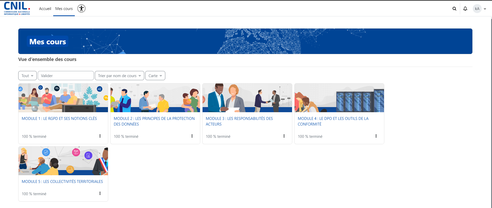
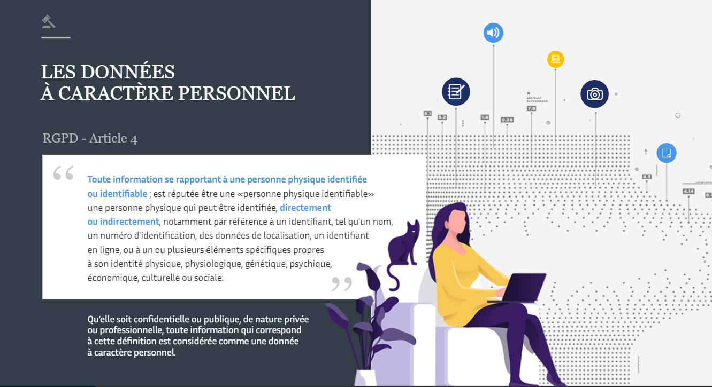
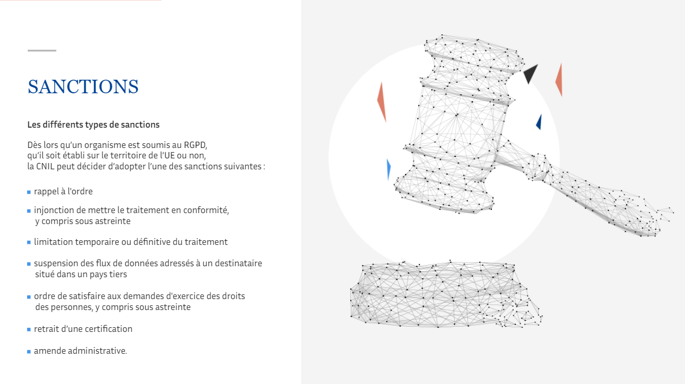
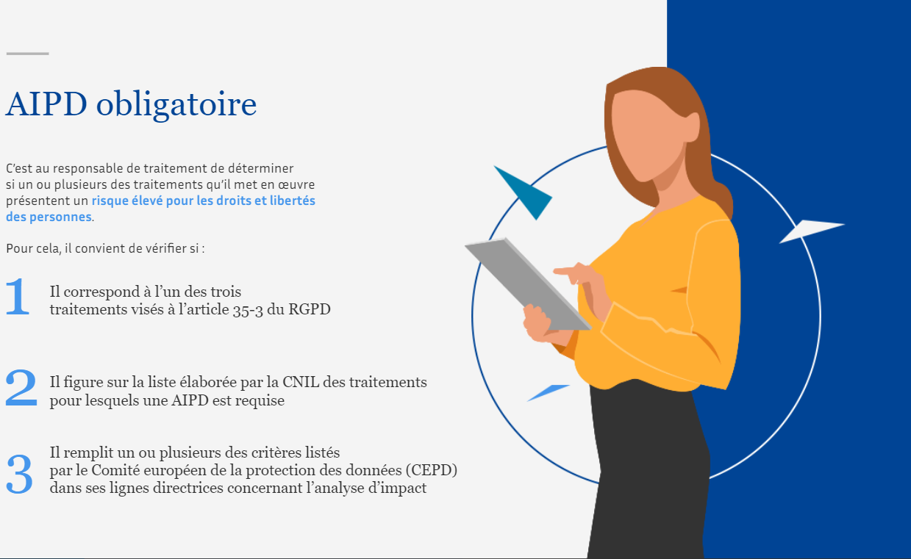
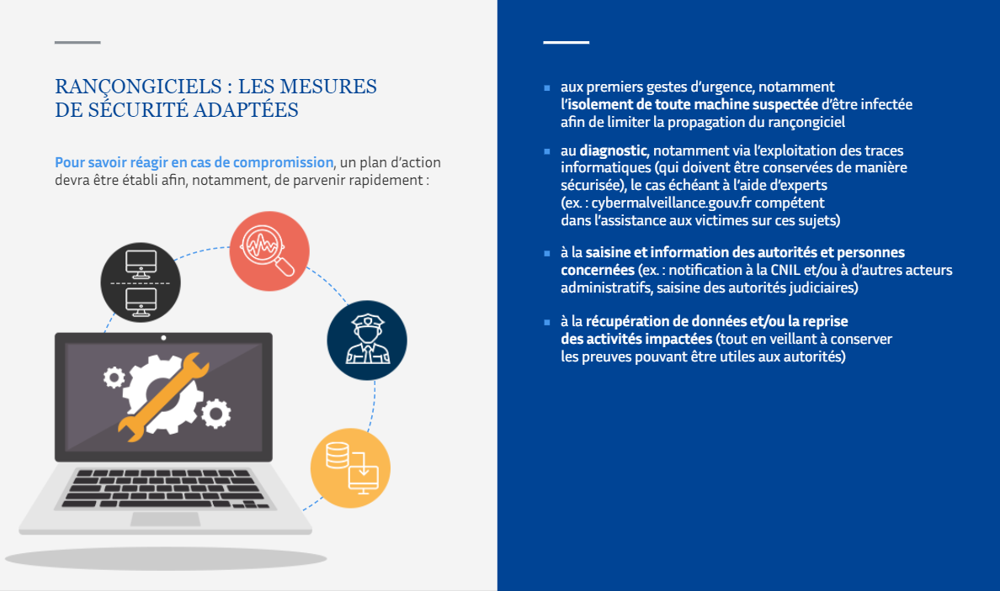

Dans cette formation, j'ai appris les principes fondamentaux du RGPD (Règlement Général sur la Protection des Données) et les bonnes pratiques pour assurer la conformité des traitements de données personnelles.
Formation OpenClassRoomsLien internet : https://atelier-rgpd.cnil.fr/login/index.php.

Mes objectifs
 Comprendre les fondamentaux du RGPD
Comprendre les fondamentaux du RGPD - Appliquer les principes de protection des données personnelles
- Assurer la conformité des traitements de données
- Acquérir des compétences en gestion des droits des personnes
- Renforcer les compétences en gestion des violations de données
- Maîtriser la documentation et la traçabilité des actions RGPD
Pourquoi cette formation ?
- -Acquérir des connaissances et des compétences en lien avec ma formation en BTS SIO.
- -Appliquer les principes du RGPD lors de mon stage pour protéger les données personnelles.
- -Développer des compétences essentielles pour mon futur professionnel dans le domaine de l'informatique.
- -Renforcer ma compréhension des enjeux liés à la protection des données et à la conformité.
- -Apprendre à identifier, prévenir et gérer les violations de données.
- -Maîtriser les bonnes pratiques pour répondre aux exigences légales des entreprises.
Les outils que j'ai utilisé
-
-Navigateur WEB
-Plateforme de formation en ligne de la CNIL (Atelier RGPD)
-Documents et guides officiels du RGPD
Quelques notions à travers des images
Donnée personnelle : Toute information relative à une personne physique identifiée ou identifiable (nom, adresse, e-mail, etc.).
Traitement des données : Toute opération effectuée sur des données personnelles (collecte, stockage, modification, suppression…).
Sanctions : En cas de non-respect du RGPD, des sanctions peuvent être appliquées par la CNIL ou d'autres autorités de contrôle. Celles-ci peuvent inclure :
AIPD obligatoire : est un processus qui permet d'évaluer les risques qu'un traitement de données personnelles peut faire peser sur la vie privée des individus concernés. Elle est obligatoire dans certaines situations, notamment lorsque le traitement de données présente un risque élevé pour les droits et libertés des personnes. Cette obligation découle du Règlement Général sur la Protection des Données (RGPD).
Rançongiciels : Les mesures de sécurités adaptées
